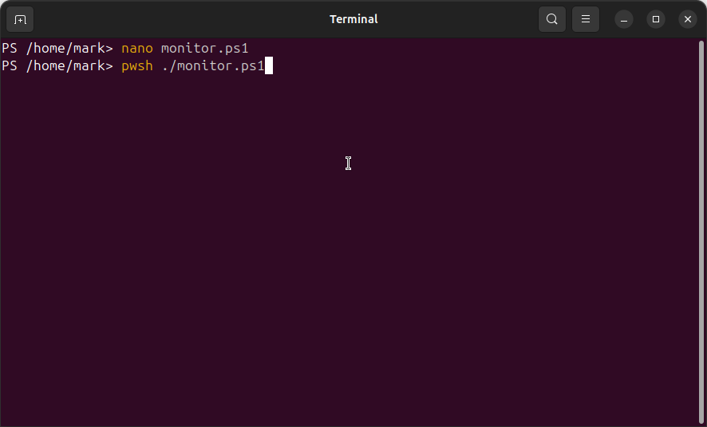

Running the Cross-Platform System Monitoring Script
This section demonstrates how to run the cross-platform system monitoring script written in PowerShell 7.
The script collects CPU usage, memory statistics, disk usage, uptime, and network information across Linux and Windows.
Below is the full execution workflow, from opening the script in Nano to generating the JSON and CSV output reports.
Step 1 — Opening the Script in Nano
The first step is to open monitor.ps1 inside Nano so you can review or edit the script.
Nano is a lightweight command-line text editor available on most Linux systems.

Step 2 — Running the Script with PowerShell (pwsh)
Once the script is ready, run it using pwsh ./monitor.ps1.
PowerShell 7 allows cross-platform execution, meaning the same script runs on Linux, macOS, and Windows.
Step 3 — Script Output: System Monitoring Report
The script outputs a formatted system summary including CPU usage, memory consumption, disk utilization,
your device's IP address, and system uptime.
This step shows the script successfully detecting Linux as the OS and displaying your system metrics.
Step 4 — Running It Again to Generate Fresh Data
Running the script again produces an updated snapshot of system performance.
This confirms the script is functioning properly and dynamically collecting fresh system data on every run.
Step 5 — Navigating the Output Directory
The script saves the JSON and CSV reports to the output directory.
Here, we confirm the directory exists and contains the latest log files, each representing an execution of the script.
Step 6 — Viewing Stored Reports
The final step demonstrates viewing the generated reports.
Using cat on a CSV output shows the system monitoring data serialized into a readable key/value format.